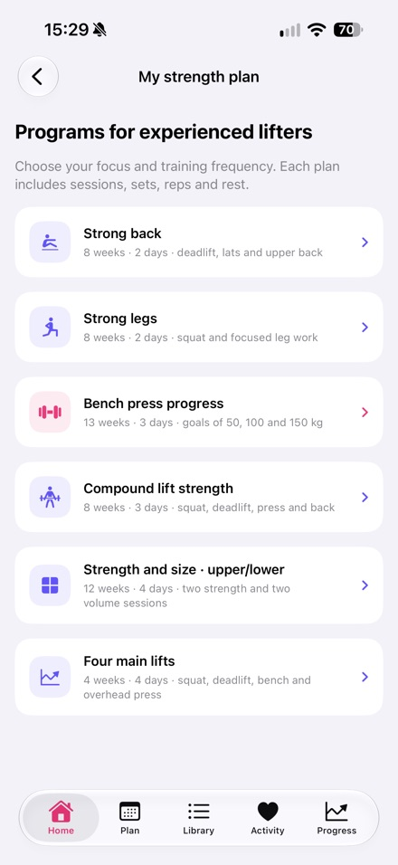

Written by Nikita Revin, developer of Tonus. Published 16 October 2026. This is a developer guide for the released version 1.4.
Compare short home sessions with the six strength programs, including experience, equipment and suggested loads.
Download Tonus
Check which kind of plan you are opening
Tonus includes short home sessions and strength programs for the gym. The 5, 10 and 20-minute home sessions have equipment-free options. The strength-program screen identifies its programs as intended for experienced lifters. Read that requirement and the equipment details before choosing a program.
For a sequence of home workouts
The flexible trainer contains 12 workouts on three selected training days, with rest between them. Duration and light or regular effort are separate choices. A missed session moves to the next selected day while completed workouts stay saved. The home screen also has an entry for a quick workout without a plan.
Review the six strength programs
The list covers back, legs, bench-press progress, full-body strength, an upper/lower strength-and-volume split, and four basic strength movements. The cards describe a focus, duration and frequency. Equipment and experience requirements differ, so the program name alone does not establish whether it fits your situation.
Review suggested loads before using them
Gym programs show sets, repetitions, rest and suggested loads, with manual weight adjustment. A suggested load or a bench-press target is a goal, not a guaranteed outcome. Check the program's requirements, your execution and recovery. Seek qualified guidance when you need help assessing whether a program is appropriate.
Access and connectivity
Both formats are included in free access without an account, subscription or in-app purchase. Plans and written instructions work offline. Online videos require a connection, and external services may show ads. Workout history and Health data stay on the iPhone; Apple Health is optional. This guide describes Tonus 1.4 for iOS 17 or later.
Tonus does not provide medical care. Stop if you feel pain or unwell. If you have health restrictions, discuss training with a qualified professional.
Download Tonus